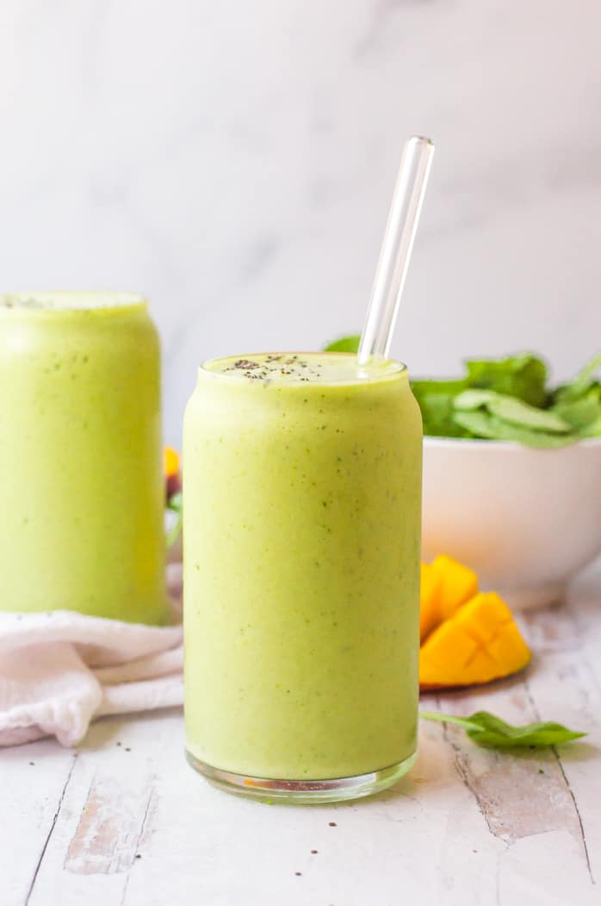

Vitality Smoothie

Recipe Description
Life is busy. If blending your nutrient-dense ingredients is the
only way to squeeze them into your daily life, then this
smoothie is for you. Between its customizable ingredient list,
quick cleanup, and beautiful aesthetics, this treat
Ingredient List
- 1 cup spinach
- 1/2 cup frozen mango chunks
- 3-5 fresh strawberries
- 1 cup almond milk (adjust for thickness)
- optional: chia seeds
- optional: collagen powder
- optional: fiber power
Recipe Steps
- combine all ingredients in blender and blend until there are no
more lumps
- add water or almond milk to adjust smoothie texture
- serve!